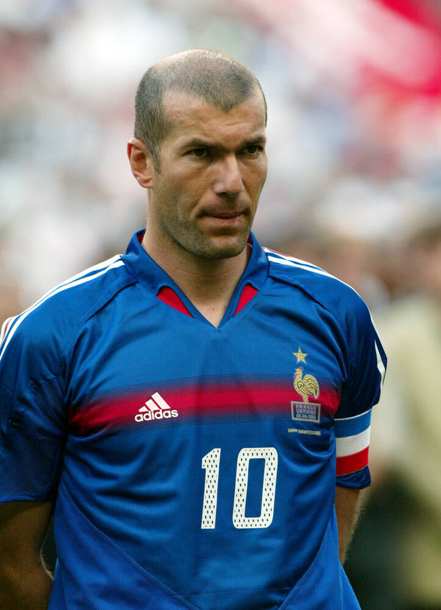

Hall da Fama do Futebol
Os maiores jogadores da história, reunidos em um só lugar
Era moderna: de 1990 em diante
Com transmissão global, calendário lotado e clubes-potência, a era moderna
produziu jogadores que somaram títulos e prêmios em escala inédita. Os quatro
perfis abaixo cobrem trinta anos de futebol de altíssimo nível.
Os perfis
Zinedine Zidane
Zizou — a elegância no meio-campo

Zinédine Zidane.
Na final da Copa de 1998, marcou de cabeça duas vezes na vitória por 3 a 0
sobre o Brasil. Pelo Real Madrid, fez o voleio que decidiu a final da Liga
dos Campeões de 2002. Como técnico, repetiu o feito de vencer o torneio três
anos seguidos, de 2016 a 2018.
Reunia velocidade, drible e finalização como poucos atacantes na história.
Superou lesões graves no joelho e voltou para ser artilheiro da Copa de 2002,
com oito gols, dois deles na final contra a Alemanha. Marcou 15 gols em
Copas do Mundo.
Conquistou cinco vezes a Liga dos Campeões (uma pelo Manchester United e
quatro pelo Real Madrid) e é o maior artilheiro da história das seleções
masculinas. Sua marca registrada é a preparação física: manteve o alto
rendimento por mais de duas décadas.
Recordista de Bolas de Ouro, ganhou tudo pelo Barcelona, onde jogou de 2004
a 2021. Faltava a Copa do Mundo, e ela veio no Catar, em 2022, com Messi
eleito o melhor jogador do torneio. Também tem o ouro olímpico de 2008.
Oito Bolas de Ouro, a Copa do Mundo de 2022 com o prêmio de melhor jogador,
e uma capacidade rara de criar jogadas e marcar gols ao mesmo tempo.
Argumentos a favor de Cristiano Ronaldo
Cinco Ligas dos Campeões, títulos em três países diferentes (Inglaterra,
Espanha e Itália) e o recorde de gols por seleções, além da longevidade.
E o Brasil, quem seria o representante moderno?
Ronaldo Nazário é o nome do Hall para essa fase. Outros brasileiros, como
Ronaldinho Gaúcho, Kaká e Neymar, podem ser sugeridos na página
Indicar um craque.